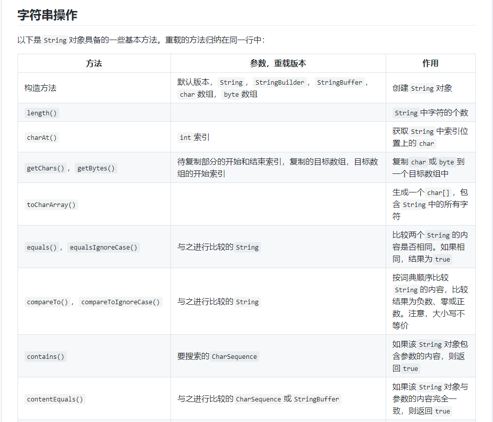
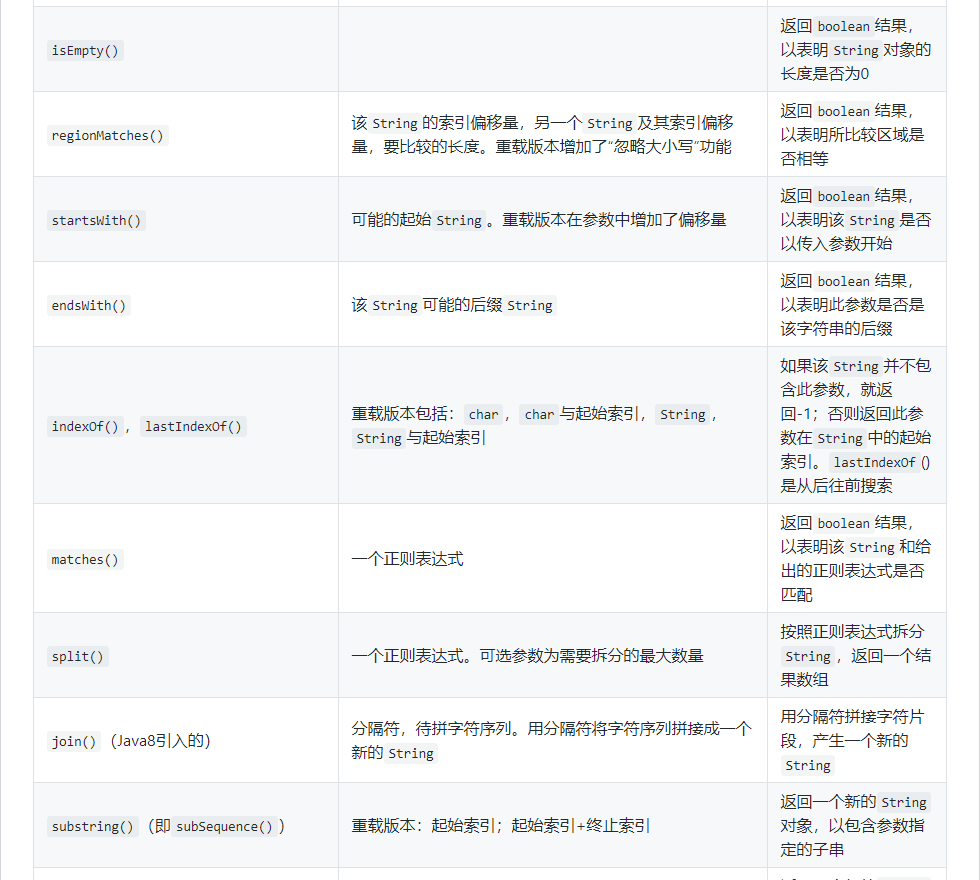
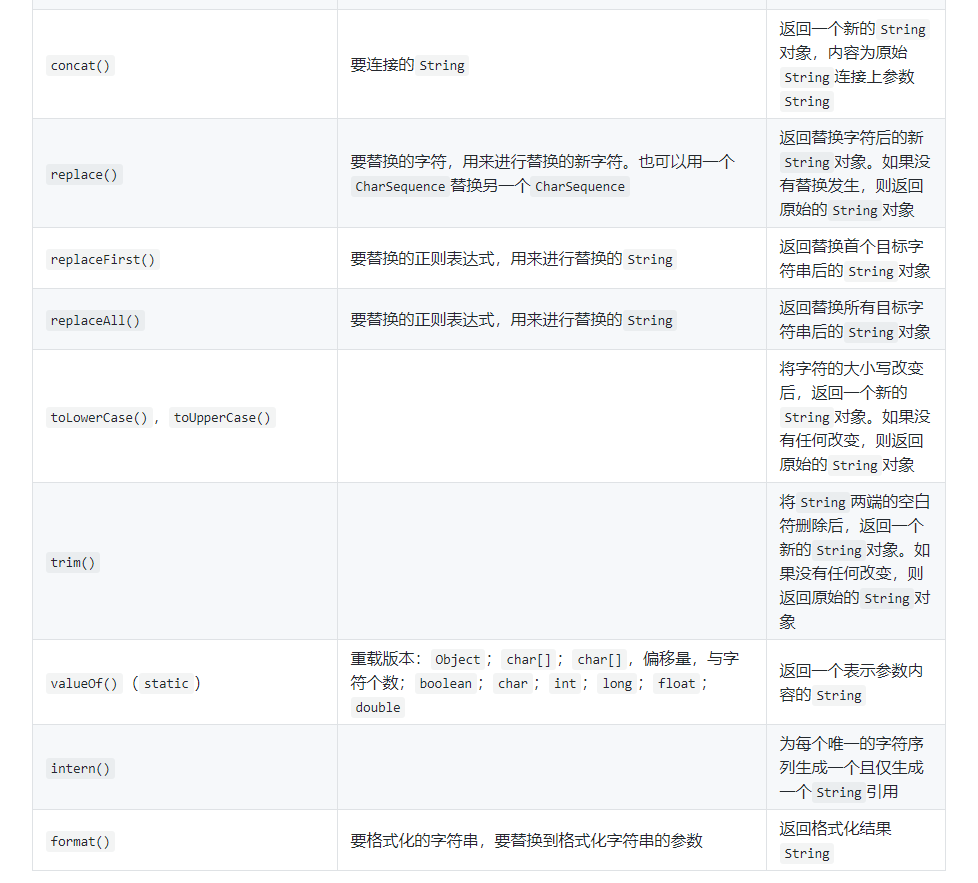

1.面经相关
①相关博客
②分类优先级
29.多线程 > 15.设计 > 23.线段树 > 22.字典树 > 19.堆 > 20.分治算法 > 4.动态规划 > 14.回溯算法 > 11.贪心算法 > 8.图 > 7.树 > 13.栈 > 24.队列 > 16.位运算 > 17.排序 > 18.链表 > 21.递归 > 12.滑动窗口 > 10.二分查找 > 9.哈希表 > 12.双指针 > 6.数学 > 5.字符串 > 3.数组
2.算法复杂度
- 什么是算法复杂度
- 时间 / 空间复杂度的含义
- 大 O 复杂度具体指的是什么？
- 有哪些常见的时间复杂度，分别举一个例子。
- 多举几个 O(1) 时间复杂度的例子
3.数组
①知识点整理
- 数组和链表的差别
- 标记数组
②LeetCode 必刷题目（49）
- 剑指 Offer（3）
- 简单（34）
- 66. 加一
- 118. 杨辉三角
- 119. 杨辉三角 II
- 189. 旋转数组
- 414. 第三大的数
- 448. 找到所有数组中消失的数字
- 485. 最大连续1的个数
- 509. 斐波那契数
- 561. 数组拆分 I
- 566. 重塑矩阵
- 581. 最短无序连续子数组
- 661. 图片平滑器
- 665. 非递减数列
- 674. 最长连续递增序列
- 697. 数组的度
- 717. 1比特与2比特字符
- 724. 寻找数组的中心索引
- 747. 至少是其他数字两倍的最大数
- 766. 托普利茨矩阵
- 830. 较大分组的位置
- 832. 翻转图像
- 867. 转置矩阵
- 888. 公平的糖果交换
- 896. 单调数列
- 905. 按奇偶排序数组
- 941. 有效的山脉数组
- 985. 查询后的偶数和
- 989. 数组形式的整数加法
- 999. 可以被一步捕获的棋子数
- 1051. 高度检查器
- 1085. 最小元素各数位之和
- 1295. 统计位数为偶数的数字
- 1304. 和为零的N个唯一整数
- 1313. 解压缩编码列表
- 中等（11）
- 困难（1）
③相关博客
4.动态规划
5.字符串
①知识点整理
- KMP 算法
- 正则表达式
②LeetCode 必刷题目（40）
- 剑指 Offer（3）
- 简单（27）
- 14. 最长公共前缀
- 38. 外观数列
- 58. 最后一个单词的长度
- 157. 用 Read4 读取 N 个字符
- 383. 赎金信
- 415. 字符串相加
- 434. 字符串中的单词数
- 443. 压缩字符串
- 459. 重复的子字符串
- 520. 检测大写字母
- 521. 最长特殊序列 Ⅰ
- 541. 反转字符串 II
- 551. 学生出勤记录 I
- 557. 反转字符串中的单词 III
- 657. 机器人能否返回原点
- 680. 验证回文字符串 Ⅱ
- 686. 重复叠加字符串匹配
- 696. 计数二进制子串
- 709. 转换成小写字母
- 788. 旋转数字
- 804. 唯一摩尔斯密码词
- 824. 山羊拉丁文
- 893. 特殊等价字符串组
- 929. 独特的电子邮件地址
- 1108. IP 地址无效化
- 1119. 删去字符串中的元音
- 1165. 单行键盘
- 中等（8）
- 困难（2）
③相关博客
- Java 的字符串操作：



6.数学
①知识点整理
- 约瑟夫环
- 牛顿迭代法
- 排列组合
- 前 n 项和
- 快速幂算法
②LeetCode 必刷题目（41）
- 剑指 Offer（7）
- 简单（23）
- 中等（9）
- 困难（2）
③相关博客
7.树
①知识点整理
- 树的概念
- 二叉树有哪几种形式？
- 什么是平衡二叉树、满二叉树、完全二叉树
- Trie 树和二叉树的区别
- 树和链表的区别？
- 讲讲树和图，它们有什么区别？
- 树的遍历
- 递归求解树
- 路径相关
- 二叉搜索树
- 在含有 100 个节点的二叉搜索树中找到其中第 80 大的节点
②LeetCode 必刷题目（78）
- 剑指 Offer（14）
- 树的遍历（19）
- 适合递归求解（21）
- 路径相关（8）
- 二叉搜索树（16）
③相关博客
8.图
①知识点整理
- BFS（广度优先搜索）
- DFS（深度优先搜索）
- 最短路径算法
- 说一下数据结构中的图如何存储
- 一个有向图用邻接矩阵表示，并且是有权图，怎么判断图中有没有环（有向图判断循环引用）
②LeetCode 必刷题目（11）
- 剑指 Offer（1）
- 中等（8）
- 困难（2）
③相关博客
9.哈希表
①知识点整理
- 怎么防止 hash 碰撞
- K—V
②LeetCode 必刷题目（47）
- 剑指 Offer（2）
- 简单（31）
- 1. 两数之和
- 204. 计数质数
- 205. 同构字符串
- 217. 存在重复元素
- 219. 存在重复元素 II
- 242. 有效的字母异位词
- 290. 单词规律
- 299. 猜数字游戏
- 349. 两个数组的交集
- 350. 两个数组的交集 II
- 387. 字符串中的第一个唯一字符
- 409. 最长回文串
- 447. 回旋镖的数量
- 463. 岛屿的周长
- 500. 键盘行
- 575. 分糖果
- 594. 最长和谐子序列
- 599. 两个列表的最小索引总和
- 645. 错误的集合
- 748. 最短完整词
- 760. 找出变位映射
- 771. 宝石与石头
- 811. 子域名访问计数
- 884. 两句话中的不常见单词
- 953. 验证外星语词典
- 961. 重复 N 次的元素
- 1002. 查找常用字符
- 1160. 拼写单词
- 1189. “气球” 的最大数量
- 1207. 独一无二的出现次数
- 1213. 三个有序数组的交集
- 中等（9）
- 困难（5）
③相关博客
- Java 集合的用法
10.二分查找
①知识点整理
②LeetCode 必刷题目（31）
- 剑指 Offer（4）
- 简单（13）
- 中等（12）
- 困难（2）
③相关博客
11.贪心算法
①知识点整理
②LeetCode 必刷题目（13）
- 简单（2）
- 中等（8）
- 困难（3）
③相关博客
12.双指针（滑动窗口）
①知识点整理
- 滑动窗口
②LeetCode 必刷题目（26）
- 剑指 Offer（4）
- 简单（13）
- 中等（9）
③相关博客
13.栈
①知识点整理
- 堆与栈的区别
- 栈的时间复杂度、空间复杂度
- 栈的应用场景
②LeetCode 必刷题目（25）
- 剑指 Offer（3）
- 简单（9）
- 中等（7）
- 困难（6）
③相关博客
14.回溯算法
①知识点整理
②LeetCode 必刷题目（23）
- 剑指 Offer（1）
- 简单（2）
- 中等（17）
- 困难（3）
③相关博客
15.设计
①知识点整理
②LeetCode 必刷题目（21）
- 剑指 Offer（2）
- 简单（6）
- 中等（9）
- 困难（4）
③相关博客
16.位运算
①知识点整理
- 进制转换
- 运算符
②LeetCode 必刷题目（26）
- 剑指 Offer（4）
- 简单（14）
- 中等（8）
③相关博客
17.排序
①知识点整理
- 比较排序
- 交换排序类：简单交换排序、冒泡排序、快速排序
- 选择排序类：简单选择排序、堆排序
- 插入排序类：直接插入排序、希尔排序
- 归并排序类：归并排序
- 非比较排序
- 计数排序
- 桶排序
- 基数排序
②LeetCode 必刷题目（21）
- 剑指 Offer（3）
- 简单（3）
- 中等（11）
- 困难（4）
③相关博客
18.链表
①知识点整理
- 单链表和双链表的区别及应用场景
- 链表和数组的区别
- 用数组实现循环链表
②LeetCode 必刷题目（31）
- 剑指 Offer（7）
- 简单（9）
- 中等（14）
- 困难（1）
③相关博客
19.堆
①知识点整理
②LeetCode 必刷题目（11）
- 剑指 Offer（1）
- 简单（1）
- 中等（7）
- 困难（2）
③相关博客
20.分治算法
①知识点整理
②LeetCode 必刷题目（11）
- 剑指 Offer（3）
- 简单（2）
- 中等（2）
- 困难（4）
③相关博客
21.递归
①知识点整理
②LeetCode 必刷题目（7）
- 剑指 Offer（2）
- 简单（1）
- 中等（3）
- 困难（1）
③相关博客
22.字典树
①知识点整理
②LeetCode 必刷题目（8）
- 简单（1）
- 中等（5）
- 困难（2）
③相关博客
23.线段树
①知识点整理
②LeetCode 必刷题目（6）
③相关博客
24.队列
①知识点整理
②LeetCode 必刷题目（6）
- 剑指 Offer（2）
- 简单（2）
- 中等（2）
③相关博客
25.红黑树
①知识点整理
- 左旋和右旋怎么做？
- 红黑树的时间复杂度
- 红黑树和平衡二叉树的区别
- 红黑树的应用
②相关博客
- 红黑树详解
- 腾讯面试题：有了二叉查找树、平衡树为啥还需要红黑树？
- 红黑树、AVL树、B树的比较
- 红黑树详细分析(图文详解)，看了都说好
- 红黑树和B树应用场景总结
- 2-3树与红黑树
- 红黑树，超强动静图详解，简单易懂
26.海量数据处理
27.限流算法
①计数器算法
②令牌桶算法
③漏桶算法
28.查找算法
①顺序查找
②二分查找
③插值查找
④斐波那契查找
⑤树表查找
a.二叉搜索树
b.平衡查找树之 2-3 Tree
c.平衡查找树之红黑树
⑥分块查找
⑦哈希查找
29.多线程
①知识点整理
- 实现多线程同步的 ATM 存款取款
- 生产者—消费者模型
- 设计线程安全的阻塞队列（队列空时消费者阻塞、队列满时生产者阻塞）
- 死锁代码示例
- 设计一个线程池
②LeetCode 必刷题目（7）
- 简单（1）
- 中等（6）
③相关博客
- Java并发编程之基础概念
- Synchronized关键字
- finnal关键字
- volatile关键字
- ReentrantLock锁
- Java并发编程之线程8大核心基础
- Java并发编程之Java内存模型
- Java并发编程之死锁的前生今世
- Java并发工具类简介
- [LeetCode] 1114. 按序打印（Easy）Java语言题解
- [LeetCode] 1115. 交替打印FooBar（Medium）Java语言题解
- [LeetCode] 1116. 打印零与奇偶数（Medium）Java语言题解
- [LeetCode] 1188. 设计有限阻塞队列（Medium）Java语言题
- [LeetCode] 1195. 交替打印字符串（Medium）Java语言题解
- [LeetCode] 1226. 哲学家进餐（Medium）Java语言题解
30.智力题
附录
- 我的个人博客：messi1002.top
- 如有错误或疑惑之处 请联系 wjymessi@163.com